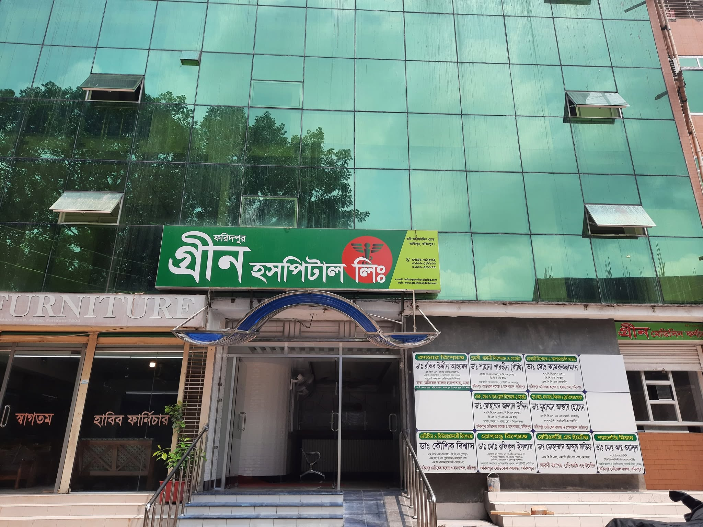

"গ্রিন হাসপাতালের সেবা সত্যিই প্রশংসনীয়। আমার মায়ের অপারেশনের সময় ডাক্তার ও নার্সদের আন্তরিকতা আমাদের মুগ্ধ করেছে।"
অপারেশন থিয়েটার
জরুরি সেবা
অভিজ্ঞ বিশেষজ্ঞ ডাক্তার
আধুনিক ডায়াগনস্টিক ল্যাব

গ্রিন হাসপাতাল লিমিটেড ফরিদপুর সদর অঞ্চলে দীর্ঘদিন ধরে সুনামের সাথে স্বাস্থ্যসেবা প্রদান করে আসছে। রোগীদের সর্বোচ্চ মানের চিকিৎসা ও যত্ন নিশ্চিত করাই আমাদের প্রধান লক্ষ্য।
আধুনিক বিশেষজ্ঞ ডাক্তার, ডিপ্লোমা নার্স, অভিজ্ঞ স্বাস্থ্যকর্মী ও সর্বাধুনিক প্রযুক্তির সমন্বয়ে ডিজিটাল পদ্ধতিতে চিকিৎসা সেবার ব্যবস্থা করা হয়েছে।
১২+ বিশেষায়িত বিভাগে অভিজ্ঞ চিকিৎসকদের দ্বারা আধুনিক চিকিৎসা সেবা প্রদান
সাধারণ মেডিসিন, নিউরোলজি, ডায়াবেটিস, উচ্চ রক্তচাপ, থাইরয়েড ও হরমোনজনিত জটিল রোগের সুচিকিৎসা।
ডা. মো. শহিদুর রহমান (মিলন)পাকস্থলী, লিভার, আলসার, গ্যাস্ট্রিক ও হেমাটোলজি রোগের আধুনিক চিকিৎসা।
ডা. মো. শহিদুর রহমান (মিলন)হাড় ভাঙা, জয়েন্ট পেইন, ট্রমা, প্যারালাইসিস ও অর্থো-সার্জারি বিশেষজ্ঞ পরামর্শ।
অধ্যাপক ডা. মো. গোলাম কবীরমস্তিষ্ক, মেরুদণ্ড (Spine), স্ট্রোক ও নার্ভের জটিল রোগের বিশেষজ্ঞ পরামর্শ ও সার্জারি।
ডা. এন. এইচ. তুষারগর্ভকালীন যত্ন, নরমাল ও সিজারিয়ান ডেলিভারি, জরায়ুর অপারেশন ও ল্যাপারোস্কপিক সার্জারি।
২৪/৭ প্রসূতি সেবাচর্মরোগ, যৌন সমস্যা, এলার্জি, ব্রণ ও এলার্জি জনিত রোগের দীর্ঘমেয়াদী সমাধান।
ডা. শাকিলা জামানঢাকা মেডিকেল কলেজ, বিএসএমএমইউ, এনআইসিভিডি, এনআইএনএস সহ শীর্ষস্থানীয় প্রতিষ্ঠানের বিশেষজ্ঞ চিকিৎসকগণ
ঢাকার শীর্ষস্থানীয় মেডিকেল কলেজ ও ইনস্টিটিউট থেকে প্রশিক্ষিত বিশেষজ্ঞ চিকিৎসক।
আধুনিক ডিজিটাল ডায়াগনস্টিক, ৪ডি আল্ট্রাসনোগ্রাফি ও ডিজিটাল এক্স-রে।
জীবাণুমুক্ত ও আরামদায়ক পরিবেশে রোগীর সেবা নিশ্চিত করা হয়।
সকল সর্বস্তরের মানুষের কাছে সাশ্রয়ী মূল্যে মানসম্মত চিকিৎসা সেবা।
দিন-রাত ২৪ ঘণ্টা ইমার্জেন্সি, অ্যাম্বুলেন্স ও ফার্মেসি সেবা।
বীর মুক্তিযোদ্ধাদের চিকিৎসায় বিশেষ ছাড়ের ব্যবস্থা।
"গ্রিন হাসপাতালের সেবা সত্যিই প্রশংসনীয়। আমার মায়ের অপারেশনের সময় ডাক্তার ও নার্সদের আন্তরিকতা আমাদের মুগ্ধ করেছে।"
"ডায়াগনস্টিক রিপোর্ট খুব দ্রুত ও নির্ভুল পেয়েছি। পরিবেশ খুব পরিষ্কার ও পরিচ্ছন্ন।"
"অধ্যাপক ডা. গোলাম কবীর স্যারের চিকিৎসায় আমার হাঁটুর সমস্যা সেরে গেছে। খুবই অভিজ্ঞ ও ধৈর্যশীল ডাক্তার।"
আমাদের আধুনিক বহুতল ভবন, রিসেপশন, ওয়েটিং লাউঞ্জ, ডায়াগনস্টিক ল্যাব ও উন্নত পরিবেশের বাস্তব চিত্র